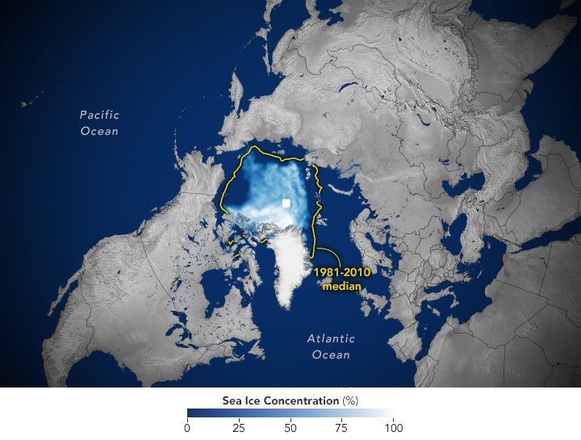

Arctic Sea Ice Ties for 10th-Lowest on Record
With the end of summer 2025 approaching in the Northern Hemisphere, the extent of sea ice in the Arctic shrank to its annual minimum on September 10, according to NASA and the National Snow and Ice Data Center. The total sea ice coverage was tied with 2008 for the 10th-lowest on record at 4.60 million square kilometers (1.78 million square miles).
This map shows the sea ice extent (white) on September 10 compared to the 1981–2010 average extent for the same day (yellow line). Scientists calculate sea ice extent by dividing the ocean into a grid of squares and adding up the area of those that meet a concentration threshold; that is, the square is at least 15 percent covered by ice.
The areas of ice covering the oceans at the poles fluctuate through the seasons. Ice accumulates as seawater freezes during colder months and melts away during the warmer months. But the ice never quite disappears entirely at the poles. In the Arctic Ocean, the area the ice covers typically reaches its yearly minimum in September. Since scientists at NASA and the National Oceanic and Atmospheric Administration (NOAA) began tracking sea ice at the poles in 1978, sea ice extent has generally been declining as global temperatures have risen.
“While this year’s Arctic sea ice area did not set a record low, it’s consistent with the downward trend.” – Nathan Kurtz, Chief of the Cryospheric Sciences Laboratory, NASA Goddard Space Flight Center
Line graph showing Arctic sea ice extent in 2025, represented by a red line. The extent increases during the winter months and declines through summer. The 2025 minimum remains above the record low from 2012, shown as an orange line, but is significantly below the 1981–2010 average, represented by a dashed line.
Arctic ice reached its lowest recorded extent in 2012. Ice scientist Walt Meier of the National Snow and Ice Data Center at the University of Colorado Boulder attributes that record low to a combination of a warming atmosphere and unusual weather patterns. This year, the annual decline in ice initially resembled the changes in 2012. Although the melting tapered off in early August, it wasn’t enough to change the year-over-year downward trend.
“For the past 19 years, the minimum ice coverage in the Arctic Ocean has fallen below the levels prior to 2007. That continues in 2025.” – Walt Meier, National Snow and Ice Data Center